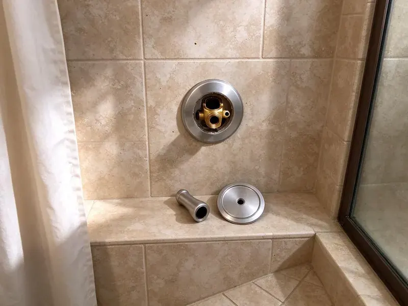

Urinal Installation in Richland, WA
Need a new urinal installed at your business or home in Richland, WA? FHN Plumbing offers professional, code-compliant solutions.
- Local Richland pros
- Upfront pricing
- Satisfaction guaranteed
- Sensor and Manual Flush Valves

Get Your Urinal Installed Right and On Schedule in Richland, WA.
Our skilled technicians are ready to provide top-notch service for your plumbing needs.
Reliable Urinal Installation for Your Property in Richland, WA
FHN Plumbing helps Richland property owners choose between manual flushometers, sensor valves and waterless urinals based on traffic and water costs. With rising water and sewer rates, low-flow and waterless models are in demand. We handle the plumbing so the fixture performs and stays easy to maintain.
Our expertise includes:
- Commercial grade urinal installs
- ADA-compliant installations
- Proper water supply line setup

Additional Bathroom Plumbing Services in Richland, WA
From toilets to showers, our bathroom plumbing team in Richland, WA handles repairs, installs, and upgrades with tidy, code-compliant work.


Customers
Why Choose FHN Plumbing for Urinal Installation in Richland, WA?
Choosing the right professionals for urinal installation means your system functions properly and meets all local Washington plumbing codes. Our team has extensive experience with the demands of these fixtures.
- Cleanliness, Proper installation prevents common issues like splashing and odor, maintaining a hygienic environment.
- Water Efficiency, Our installations prioritize water-saving models to help reduce utility costs for our Richland clients.
- Durable Setup, We use high-quality mounting hardware and sealant materials to ensure your urinal is securely fastened and leak-proof for years to come.
Citywide Coverage
FHN Plumbing proudly serves every neighborhood in Richland, so that businesses and homeowners alike have access to expert urinal installation services. No matter where you are located within Richland, our plumbers are ready to assist you promptly.
Experienced Team
The FHN Plumbing team is made up of experienced professionals who have successfully completed countless urinal installations. Their expertise means that every connection is sealed correctly and every fixture is mounted securely, preventing future problems.
Safety-First Approach
Safety and code compliance are paramount in every urinal installation project we take on. We provide proper backflow prevention, secure anchoring, and correct drain sizing to prevent hazards and protect long-term system integrity.
Trusted Certified Richland Plumbing Services Professionals
At FHN Plumbing, we take pride in providing certified plumbing services throughout Richland, WA. Backed by recognized industry credentials, our experienced plumbers combine technical skill with genuine customer care. Whether it is repair, installation, or maintenance, we follow strict safety and quality standards to deliver long-lasting results you can trust.
Call Us Now PHCC Plumbing Contractor Recognition
PHCC Plumbing Contractor Recognition Better Business Bureau (BBB) Accreditation
Better Business Bureau (BBB) Accreditation Angi Certified Pro
Angi Certified Pro ISO 9001 Quality Management Certification
ISO 9001 Quality Management CertificationDependable Urinal Installation Services in Richland, WA
Waterless Urinal Installation in Richland
Waterless urinals are an excellent choice for businesses and institutions in Richland looking to conserve water and reduce utility bills. FHN Plumbing is proficient in the installation of various waterless urinal brands, providing proper sealant cartridge setup and drain line connection. These systems require precise installation to prevent odors and maintain hygiene, which our experts handle with care.

Urinal Installation Cost Factors in Richland, WA
Costs depend on the fixture type, whether a carrier is needed, and how far the drain and supply must run. Sensor valves cost more than manual valves, and waterless urinals have higher upfront prices but save water over time. Replacements using existing lines are the least expensive. We provide a detailed quote that shows each cost.
American Standard Urinal Installation in Richland
FHN Plumbing proudly installs American Standard urinals in Richland properties. American Standard offers a broad range of designs, from standard washdown models to high-efficiency units. Our team makes sure that each American Standard urinal is mounted securely, with precise water supply and drain connections. We handle all aspects, from bolt-down to sealing, providing a reliable and clean-looking installation for your restroom.
Flush Valve Urinal Installation in Richland, WA
Traditional flush valve urinals are a common choice for their reliability and robust performance. FHN Plumbing installs all types of flush valve urinals, including those with manual or sensor-activated flush mechanisms. We provide correct water supply line connections, proper flush volume settings, and secure mounting to the wall, delivering a leak-free and efficient operation for your property in Richland, WA.
Urinal Brands We Install in Richland, WA
FHN Plumbing has experience installing a broad range of popular urinal brands, including American Standard, Kohler, Zurn, Sloan, and Toto. We are familiar with the specific installation requirements and components of each manufacturer. Whether you have a preferred brand or need guidance on selecting the best urinal for your needs in Richland, WA, our team can provide expert advice and professional installation.
Sloan Urinal System Installation in Richland, WA
Sloan is a leading brand in commercial plumbing, known for its durable and reliable urinal flushometers and fixtures. FHN Plumbing specializes in Sloan urinal system installation in Richland, WA. Our plumbers are familiar with Sloan's specific requirements, including sensor-activated flush valves and complex water supply connections. We ensure that your Sloan system is installed correctly for strong performance and a long service life, which is important in high-traffic environments.
ADA Urinal Installation in Richland
Accessible urinals must have the rim no higher than 17 inches above the floor and enough clear floor space in front. We set the carrier and fixture to meet these rules and place the flush control within reach. This is essential for public restrooms and new construction. We review the layout before setting the fixture.

ADA-Compliant Urinal Installation in Richland
Meeting ADA (Americans with Disabilities Act) guidelines is crucial for public and commercial restrooms. FHN Plumbing specializes in ADA-compliant urinal installations in Richland, ensuring proper height, clear floor space, and grab bar placement where required. Our attention to detail helps businesses provide accessible facilities while meeting all necessary regulations.
Local Urinal Installation Near Me in Richland, WA
Business owners need a plumber who shows up when promised and keeps restrooms open. We schedule urinal installs in Richland around your hours, including early mornings and evenings. That keeps disruption to a bare minimum.
When you search for 'urinal installation near me' in Richland, WA, FHN Plumbing is your dependable local choice. We prioritize rapid response times and efficient service to address your plumbing needs quickly, minimizing inconvenience.
FHN Plumbing at a Glance
- Licensed and insured plumbers serving Richland, WA
- Same-day appointments and 24/7 emergency response
- Clear written estimates, no hidden fees
- 4.9-star rated by 382+ Washington customers
Richland Map
Richland Information
- Population
- 63,757
- Area codes
- 509/206/541
- Service area
- Richland and communities within 40 miles
- Nearby
- Kennewick, Pasco, Yakima, Wenatchee
Water conservation pays off for every business, so efficient urinal installation helps Richland, WA businesses lower water bills while meeting commercial restroom codes.
Expert Services
Trust our professionals for reliable FHN Plumbing solutions in Richland, WA.
Our Specialized Plumbing Services in Richland, WA
At FHN Plumbing, we provide a complete range of plumbing services across Richland, WA. From leak detection to full system installations, our team ensures fast, precise, and affordable service for both residential and commercial properties. Explore our core services below:


How Our Urinal Installation Service Works in Richland, WA
From your initial call to the final inspection, FHN Plumbing follows a proven process for every urinal installation project.
Request a Quote
Contact FHN Plumbing today at (425) 491-3131 to discuss your urinal installation needs. We'll gather details about your project and provide a transparent, upfront estimate.
Site Assessment
Our plumber will visit your Richland property to assess the site, confirm plumbing connections, and finalize the scope of work. We'll address any specific challenges or requirements.
Professional Install
We meticulously install your new urinal, connecting water supply and drain lines and confirming secure mounting. Our team performs thorough testing for leaks and proper function.
Frequently Asked Questions About Urinal Installation in Richland
The cost for urinal installation in Richland, WA can range from $400 to $1,200, depending on the type of urinal, complexity of plumbing modifications, and whether it's a new installation or a replacement. This price typically includes labor and basic materials, but highly specialized units or extensive rough-in work can increase the overall cost.
For commercial settings, look for durability, water efficiency (like low-flow or waterless models), easy maintenance, and ADA compliance if applicable. Brands like Sloan and Zurn are popular for their sturdy commercial-grade fixtures and flushometers.
New urinals and restroom changes generally require a plumbing permit. Simple like-for-like replacements usually do not, and we will confirm with your local building department.
Switching from a 1 gpf urinal to a 0.125 gpf model saves most of the water per flush. In a busy restroom that adds up to tens of thousands of gallons a year.
Most standard urinal installations or replacements can be completed within 2 to 4 hours. However, if new plumbing lines need to be run, or if there are significant structural modifications required, the process could take a full day or more.
Constant running, cracked porcelain, persistent odor, leaks at the wall and slow drains all point to a fixture or valve that needs attention.
We install American Standard, Kohler, Toto, Sloan, Zurn and Falcon waterless fixtures. We can help match a brand to your budget and traffic.
We guarantee our installation labor, and fixtures and flush valves carry manufacturer warranties, often several years on flushometer components.
What People Are Saying About Our Plumbing Experts?

James P.
Our commercial plumbing system had a leak under the sink, and FHN Plumbing handled it professionally. The plumbers arrived quickly and restored everything without disruption to our customers.
Commercial Plumbing · Spokane Valley, WA
Patricia H.
We had a slab leak that two other companies could not find. FHN Plumbing located it in under an hour, explained our options, and the price matched the quote to the dollar.
Slab Leak Repair · Wenatchee, WA
Sofia M.
Two new toilets installed in one visit, no mess left behind, and the tech even adjusted a faucet he noticed was dripping. Fair pricing and really friendly.
Toilet Installation · Spokane, WA
Emily R.
I called FHN Plumbing for plumbing repair, and the technician was fast, polite, and thorough. They explained the problem clearly and fixed it the same day. I will definitely hire them again. Highly recommended!
Plumbing Repair · Spokane Valley, WARobert G.
The trenchless sewer replacement saved our front yard. They walked us through the camera inspection footage first so we knew exactly what we were paying for.
Sewer Line Replacement · Pasco, WA
Daniel K.
A pipe burst at 11 pm and they actually answered. The plumber showed up within the hour, shut everything down, and had us back to normal the next morning. Could not ask for more.
Emergency Plumbing · Spokane Valley, WA